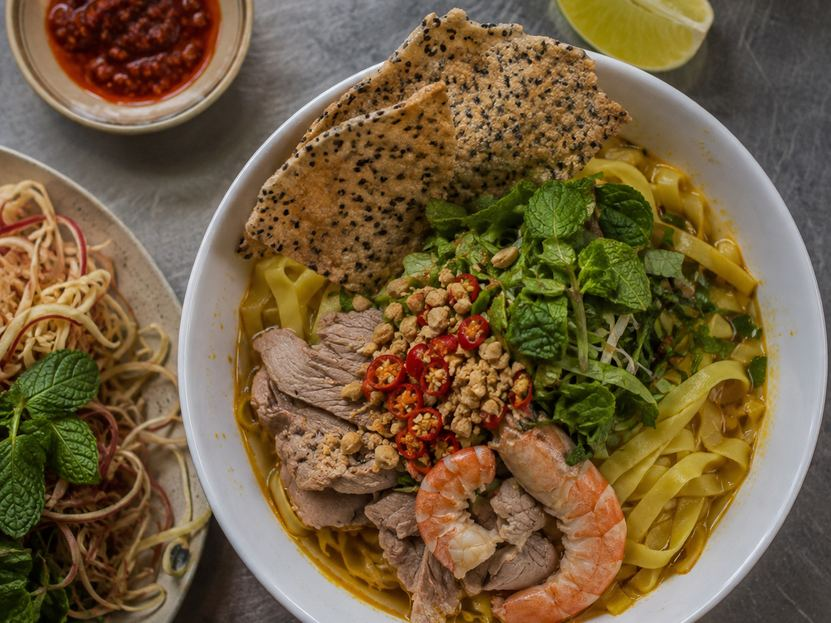
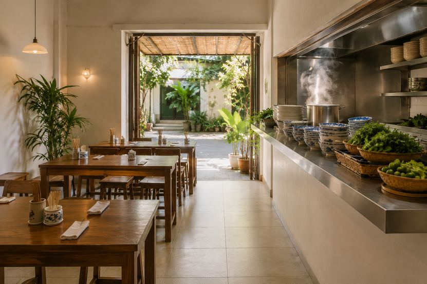

Living here
Where to Eat in Da Nang When You Actually Live Here
Bài viết này hiện chỉ có bản tiếng Anh. Menu và phần điều hướng đã chuyển sang tiếng Việt. Alice nói tiếng Việt và tiếng Anh, nhắn tin cho cô nếu bạn cần giải thích bằng tiếng Việt.
Key takeaways
- Da Nang's signature dish is mì Quảng, not phở. If you order phở here you are eating a northern dish in a city that does something else better.
- The best food sits in residential alleys and markets, not on the beach road. Vo Nguyen Giap is where seafood restaurants charge tourist prices for average fish.
- Chợ Cồn market has the highest concentration of good cheap food in the city, and almost no foreign residents eat there regularly.
- Where you rent changes what you eat every day. An Thuong gives you Western food and Vietnamese food priced for foreigners. Hai Chau and the Son Tra side give you the local version at half the price.
What food is Da Nang actually known for?
Central Vietnamese food is its own thing. It is not the northern food you get in Hanoi or the sweeter southern food from Saigon, and most people arriving here spend their first month eating the wrong things.

Mì Quảng. The dish of the region. Turmeric-yellow noodles with just enough broth to coat them rather than swim in, topped with pork and shrimp or chicken, peanuts, fresh herbs and a shard of sesame rice cracker you break over the top. Eaten at breakfast and lunch, rarely at dinner. If you eat one thing in Da Nang, this is it.
Bún chả cá. Fish cake noodle soup, and the Da Nang version is better than anywhere else in the country. Clear broth built on fish bones and pumpkin, springy fried fish cake, a spoon of chilli and shrimp paste stirred in at the table. Breakfast food.
Bánh tráng cuốn thịt heo. Boiled pork with a strip of fat and skin down the middle, rolled at the table in rice paper with an enormous pile of herbs, green banana and starfruit, dipped in fermented anchovy sauce. This is what locals order when there is something to celebrate.
Bánh xèo and nem lụi. In the south bánh xèo is a huge flat pancake. Here it is small, crisp, made in individual pans, and you eat it wrapped in rice paper with grilled lemongrass pork skewers and a thick peanut sauce.
Gỏi cá Nam Ô. Raw fish salad from the fishing village at the northern edge of the city, cured with lime and packed with roasted rice powder and herbs. Almost no tourist eats this. It is one of the best things in Da Nang.
Which neighbourhood has the best food?
| Area | What the food is like | Price level | Best for |
|---|---|---|---|
| Hai Chau (city centre) | The deepest local scene. Markets, alley shops, old family places | Cheapest | Anyone who wants to eat Vietnamese food daily |
| An Thuong / My An | Western restaurants, brunch, pizza, vegan, Vietnamese priced for foreigners | Highest | Variety, dietary needs, eating out socially |
| An Hai / Son Tra | Everyday neighbourhood food, excellent seafood away from the tourist strip | Low | Value, and living the way locals here live |
| Man Thai / near the port | Seafood at fishing village prices | Low | Weekend seafood without the beach road markup |
| Nam Ô (far north) | One dish done exceptionally well | Low | A trip rather than a habit, worth doing once a month |
| Vo Nguyen Giap (beach road) | Large seafood restaurants aimed at domestic tourists | High for what it is | The view, mostly |
This matters more than people expect when choosing where to rent. If you live in An Thuong you will eat Western food more than you planned, because it is what surrounds you. Living in Hai Chau or on the Son Tra side puts local food at every corner, and your monthly spend drops without you doing anything differently.
Where do locals eat that foreigners miss?
Chợ Cồn market. The food section on the ground floor is dense, cheap and busy, and I almost never see foreign residents there. Bánh canh, chè, all the small snacks, all under 40,000 VND. Go around 3pm when it is active but not chaotic.
The alleys off Hoang Dieu. The bánh xèo cluster back there has been running for decades. It is the sort of place where you sit on a plastic stool between two people who are not talking to you and it costs almost nothing.
Nam Ô village. About 20 minutes north along the coast, past the port. Go for gỏi cá, stay for the beach, which is empty in a way My Khe never is.
Ốc streets in the evening. Snails, clams, scallops, cooked to order with lemongrass and chilli, eaten with beer on the pavement from around 6pm. There are clusters on several streets in Hai Chau and on the Son Tra side. This is the most social food in the city and it costs almost nothing.
Mì Quảng ếch. Mì Quảng with frog instead of pork. It sounds like a dare and it is genuinely excellent. Several places in the city specialise in it.
How do you tell a good place from a bad one?
The rules here are reliable enough to eat by.

One dish only. A shop with a sign that says mì Quảng and nothing else has made mì Quảng every day for twenty years. A menu with fifty items and photographs of each one is aimed at people who do not know what they want.
Busy at the right hour. Breakfast places are full from 6:30 to 9am and dead by 10. If a breakfast shop is quiet at 8am, that means something. Lunch runs 11:30 to 1.
Plastic stools and a wet floor. Not a joke. The best food in this city is served at knee height.
Vietnamese customers, no English menu. An English menu is not automatically bad, but it usually means a price adjustment and a milder seasoning.
Turnover you can see. Ingredients sitting in bowls at the front should visibly shrink through the meal service. If a place is empty and everything is still full at 12:30, eat somewhere else.
What should you avoid?
The large seafood restaurants along the beach road. They exist for domestic tour groups, the fish is often not as fresh as the tanks suggest, and you will pay two or three times what the same meal costs in Man Thai. If someone waves you in from the pavement, keep walking.
Anything advertising itself as authentic in English.
Ordering phở here out of habit. It is available and it is fine, but you are in the one part of the country that does mì Quảng properly, and it is a waste of a meal.
I will also say plainly that bún mắm, the noodles with fermented shrimp paste, defeats most foreigners. It is a real local favourite and I am not telling you to skip it. Just do not make it your introduction to the city, and do not order it for a visiting friend on their first night.
What does eating out cost?
| Meal | Typical price |
|---|---|
| Bowl of mì Quảng or bún chả cá at a local shop | 30,000 to 50,000 VND |
| Bánh mì | 15,000 to 30,000 VND |
| Rice plate lunch (cơm bình dân) | 35,000 to 60,000 VND |
| Vietnamese coffee | 20,000 to 35,000 VND |
| Bánh tráng cuốn thịt heo for two | 200,000 to 350,000 VND |
| Seafood dinner for two, local restaurant | 400,000 to 700,000 VND |
| Western main course in An Thuong | 150,000 to 300,000 VND |
| Coffee at a Western style cafe | 55,000 to 90,000 VND |
The gap between the first line and the last line is the whole point. Eating locally, a person can spend under 3,000,000 VND a month on food. Eating in An Thuong cafes and Western restaurants, the same person spends three times that without noticing.
Frequently asked questions
What food is Da Nang famous for?
Mì Quảng, a turmeric noodle dish with very little broth, is the signature dish of the region. Da Nang is also known for bún chả cá fish cake noodle soup, bánh tráng cuốn thịt heo pork rice paper rolls, and small crispy bánh xèo pancakes eaten with grilled pork skewers.
Is Da Nang good for food?
Yes, and it is underrated compared to Hanoi and Ho Chi Minh City. Central Vietnamese cooking is its own regional style, and Da Nang has strong local specialities that are not widely available elsewhere in the country. The best food is in markets and residential alleys rather than on the beach road.
Where do locals eat in Da Nang?
Locals eat in the markets, especially Chợ Cồn, in single-dish shops in residential alleys across Hai Chau, and at pavement snail and seafood spots in the evening. Foreign residents tend to cluster in An Thuong, which has more Western food and higher prices.
How much does food cost in Da Nang?
A bowl of noodles at a local shop runs 30,000 to 50,000 VND, a bánh mì is 15,000 to 30,000, and a Vietnamese coffee is 20,000 to 35,000. Western restaurant mains in An Thuong run 150,000 to 300,000 VND, so where you eat matters more than how often.
What is mì Quảng?
Mì Quảng is a central Vietnamese noodle dish made with wide turmeric-coloured rice noodles served in a very small amount of rich broth rather than a full soup. It is topped with pork and shrimp or chicken, peanuts, fresh herbs and a piece of sesame rice cracker, and is eaten mainly at breakfast and lunch.
Is street food safe in Da Nang?
Generally yes, and busy places are safer than quiet ones because the ingredients turn over faster. Choose shops that are full at the normal meal hours, where food is cooked to order in front of you. Most stomach problems here come from empty restaurants, not busy street stalls.
Which area of Da Nang is best for food?
Hai Chau has the deepest local food scene and the lowest prices. An Thuong has the widest variety of Western and international food at the highest prices. The Son Tra and An Hai side sits between the two, with good everyday Vietnamese food and better value seafood than the beach road.
Do I need to speak Vietnamese to eat at local places?
No. Most single-dish shops sell one thing, so pointing and holding up fingers is enough. Learning the name of the dish you want and the numbers up to a hundred thousand covers almost every situation.